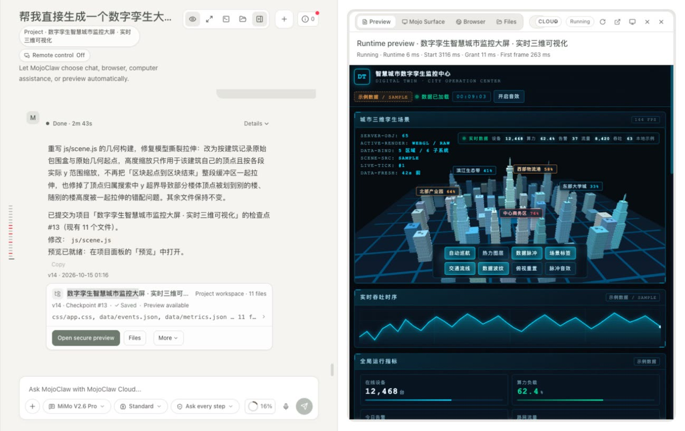
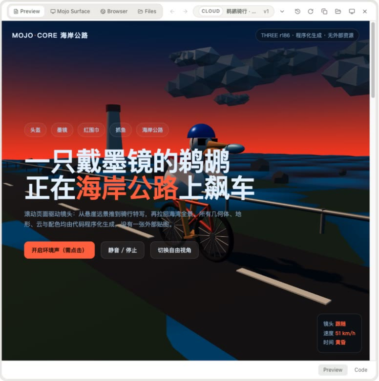
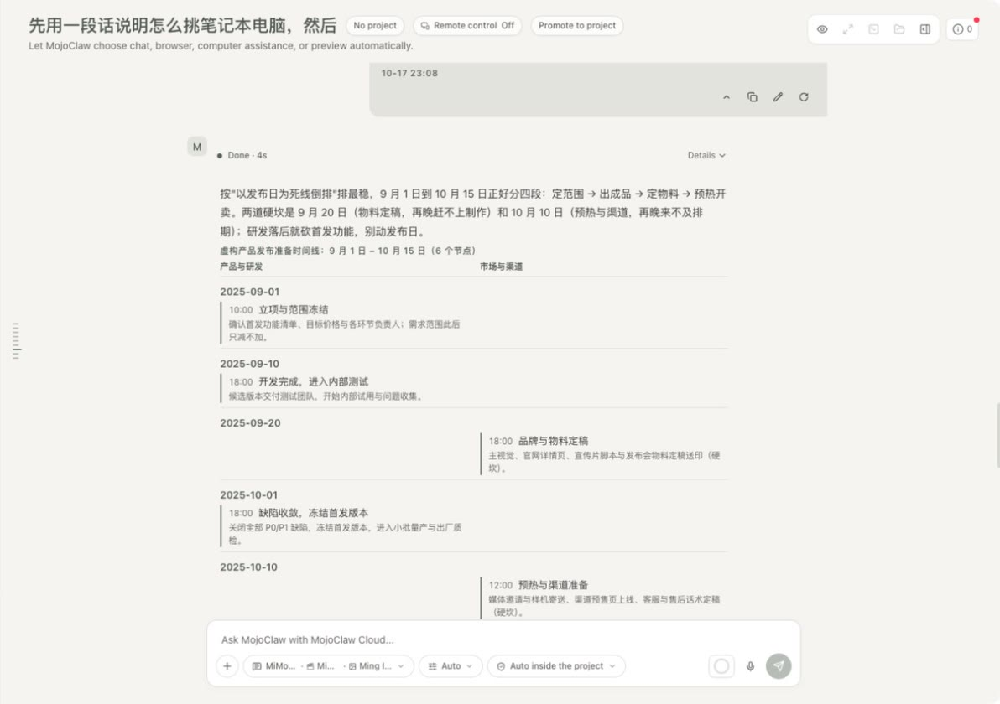
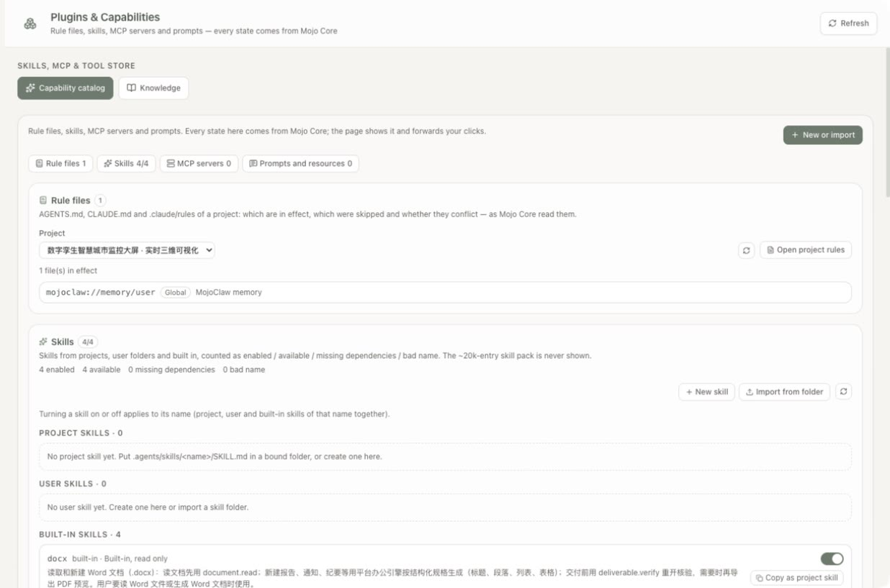
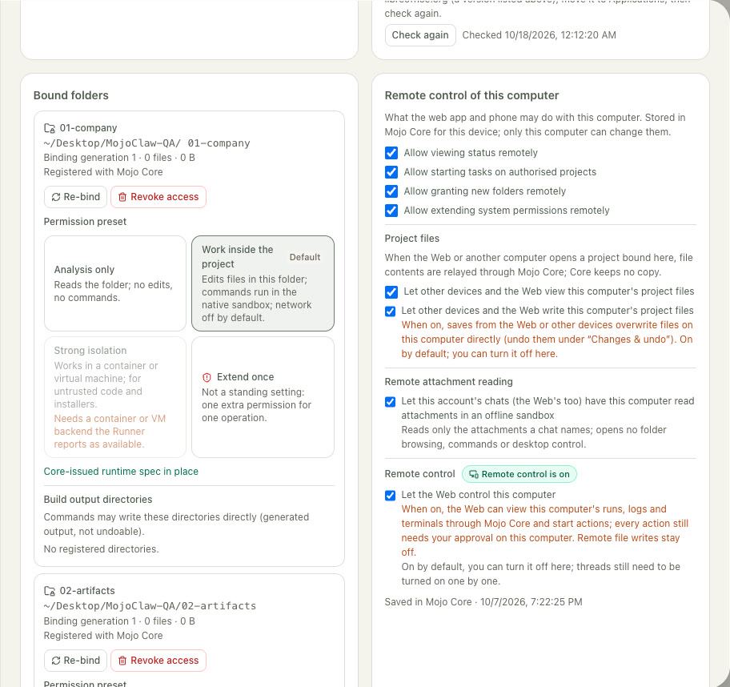
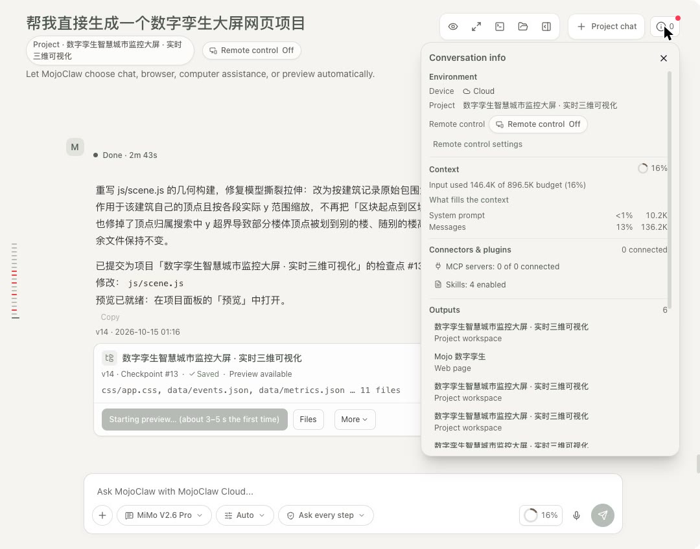

Answers disappear into the scroll.
A long chat is a poor place to keep a website, a report or a set of edits. MojoClaw turns results into projects with versions, files and a running preview.
Personal AI workbench · Web and Mac desktop
MojoClaw is a personal AI workbench on the web and the Mac desktop. Chats can become cloud projects or work inside a folder on your computer, and every result stays something you can open, preview and undo.
Running in the dev buildPrivate development build · no public download yet

media/claw/runtime-preview-dashboard.jpg
A long chat is a poor place to keep a website, a report or a set of edits. MojoClaw turns results into projects with versions, files and a running preview.
Most assistants cannot touch local files, or get the whole disk. MojoClaw binds one folder at a time, with a permission preset you choose.
Work inside the project runs on its own; crossing a boundary asks once. Every feature is designed against a confirmation budget.
Each item carries its real status. 6 of 9 screens on this page are captured from the running app; the rest are labelled placeholders.
A generated site or app is committed as a project checkpoint with its file list. The preview pane runs it in an isolated runtime and reports start-up timings.
media/claw/runtime-preview-dashboard.jpg
Single-file pages and multi-file projects open in the same preview, with tabs for the page, the surface, the browser and the files.

media/claw/runtime-preview-3d-page.jpg
Tables, timelines and other components render inside the reply. Follow-up actions such as "Generate as document" make a file only when you ask for one.

media/claw/inline-timeline.jpg
Rule files (AGENTS.md, CLAUDE.md), skills, MCP servers and prompts sit on one page with a single "New or import" entry. Each state is read from Mojo Core.

media/claw/plugins-four-sections.jpg
The desktop app runs a Local Runner. Pick a folder and a preset — analysis only, work inside the project, or extend once — and review changes with per-file undo.

media/claw/settings-local-tasks.jpg
Set a default model for new chats and add models from the catalog. The chosen model is used for every step of a run; a substitution only happens for a missing capability and is always shown.
One ⓘ popover per chat shows where the work runs, how much of the context budget is used, connectors, outputs, changes, background tasks and sources.

media/claw/session-info-popover.jpg
The web app is chat plus cloud projects, and can switch to a remote view of your own desktop. Remote control is off for every thread until you turn it on from that computer.
Long work that keeps iterating until its completion checks pass, with progress facts in the chat and a stop that always works.
Approve, stop and preview from a phone through a thin native shell over the web app. Follows the cloud deployment.
MojoClaw renders and forwards. Mojo Core decides models, permissions and run state. The Local Runner executes on your Mac, inside the folders you bind.
An illustrative flow, not a recorded session.
Open a chat in Cloud or Local. Cloud work runs in Core's project store; Local work runs on this computer.
Promote the chat to a project, or bind a folder. The project keeps files, versions and rules.
Core runs the model loop and tools. The reply streams with one status line instead of a wall of steps.
Open the preview, the checkpoint, the file list or the changes. Undo what you do not want.
Continue on the desktop, or from the web through the remote view when that thread allows it.
Bound-folder files are read on the device. With the strict local data policy, Core receives digests instead of content, and a local tool is never moved to the cloud to finish a task.
"Work inside the project" edits only that folder; commands run in the native macOS sandbox with the network off by default. A sandbox failure stops the step rather than running it unsandboxed.
Inside the project nothing asks. Crossing a boundary — a new folder, outbound data, a dangerous tool — asks once, and the answer covers that scope.
Each thread starts with remote control off. Only the computer where the thread lives can turn it on or widen it; the web can use it, not change it.
Memories are stored by Core, listed with their source chat, and can be deleted or switched off. Suggested memories wait for your confirmation.
Updated 18 October 2026. "Running in the dev build" means the owner's private deployment, not a public release.
| Item | Status | Note |
|---|---|---|
| Chat, cloud projects, checkpoints and isolated preview | Running in the dev build | Used daily in the private build. |
| Bound folders, Local Runner, changes and undo | Running in the dev build | Mac desktop. |
| Intelligent UI components with streaming | Running in the dev build | Tables, timelines and cards inside replies. |
| Conversation info popover | Running in the dev build | Replaced the separate Tasks page. |
| Rule files, skills and MCP import with trust cards | In development | Page is in the build; the kernel behind it is still in development. |
| Remote control of the desktop from the web | In development | Per-thread switch in the build; enforcement is being verified. |
| Continuous tasks | Planned | Design written; implementation not started. |
| In-app browser with a visible agent cursor | Planned | Address bar, tabs, back and forward. |
| Phone control node | Planned | Waits for cloud deployment. |
| Public release | Planned | Signing, cloud deployment and pricing come first. |
Not yet. MojoClaw is a private project in development. There is no public download or sign-up, and this page does not link to one.
The ones you pick from the catalog that Mojo Core provides. The current build offers multiple hosted models; availability depends on the provider.
Only through the remote view, only for a thread where you allowed it on that computer, and only within the permissions set there. File contents are relayed through Core without being stored.
Each picture on this page was captured from the running app. Where a capture still needs redaction or has not been taken, the page shows a labelled placeholder instead.